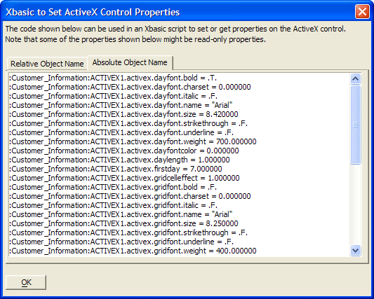

Placing ActiveX Controls
You may place ActiveX controls developed by other companies onto Alpha Five forms. To place an ActiveX control:
Select the
 tool on the Toolbox.
tool on the Toolbox.Draw a rectangle on the form that represents the position and size of the control.
Select the control in the Insert ActiveX Control dialog and click Insert.
 Note : Runtime applications
have special requirements when using 3rd party ActiveX controls. See Using 3rd Party ActiveX Controls in Runtime Applications.
Note : Runtime applications
have special requirements when using 3rd party ActiveX controls. See Using 3rd Party ActiveX Controls in Runtime Applications.
Right click on the form and select Properties... to set form-related Setup, Border, and Dimension properties.
Right click on the form and select ActiveX Properties... to set control-related properties. The contents of the resulting dialog depend entirely on the ActiveX control. See also Using ActiveX Control Events.
Right click on the form and select Show Xbasic to Set ActiveX Properties... to see how to write statements that will read or set control properties. You may copy entries and paste them into your script.

See Also
Using the Toolbox, Placing a Field on a Form, Placing a Browser Control on a Form